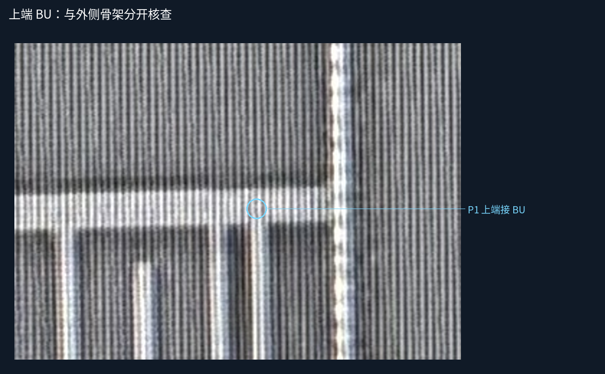

宽幅全程：先看返回线走向
点击图像打开原尺寸。

目前AI候选判断：BR-R上端接BU；L1/L2端部与它有可见间隙；下方约y3070处接一条宽横线R3，约y3175处向左回折接R4。以下均为本层原生照片观察，尚无人审，不执行新几何或网络合并。
先看L1/L2端部 · 看下部两处接入 · 候选表CSV · 来源记录 · 保持不变的五层工作模型
| 编号 | 目标 | AI本处关系候选 | 范围 |
|---|---|---|---|
| P1 | 上端接 BU | 候选接入 | 原范围内 |
| P2 | L1 本处留隙 | 候选本处不直接接 | 原范围内 |
| P3 | L2 本处留隙 | 候选本处不直接接 | 原范围内 |
| P4 | 接 R3 下方宽横条 | 候选接入 | 超原y3000范围，仅来源核查 |
| P5 | 接 R4 底部左折条 | 候选接入 | 超原y3000范围，仅来源核查 |
本处不接不等于全局异网；R3/R4只是本页来源标签，不是已建立的规范金属ID。邻近y3090/y3158的细横条没有随P4/P5并入。旧近似L1/L2端点不能代替真实照片端部。
点击图像打开原尺寸。
点击图像打开原尺寸。

点击图像打开原尺寸。

点击图像打开原尺寸。

既有32条金属候选、11个已审跨层接口和46个设计孔中心保持。BF24/25/26及A/B的裁决直接继承，不重问。无新V1/V2、孔数、网号或层间投影。
P4/P5位于原来源y3000边界以下；只扩充观察上下文，旧780×1240工作画布不变。不能把出界继续当物理终端，也不能压缩原几何把返回线硬塞进画布。
收到来源裁决后，再确定如何保留旧坐标及记录来扩展工作范围。无标记图可逐像素回查；静态资源/脚本检查不代表浏览器交互实测。